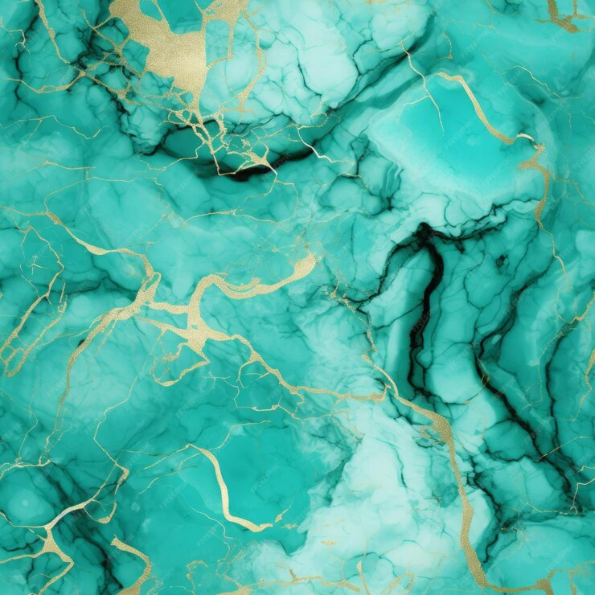

No-Bake Berry Cheesecake Parfaits
Ingredients:
- 1 cup graham cracker crumbs
- 4 tbsp unsalted butter, melted
- 8 oz cream cheese, softened
- ¼ cup powdered sugar
- 1 cup heavy cream
- 1 tsp vanilla extract
- 1 cup mixed berries (strawberries, blueberries, raspberries)
Instructions:
- In a bowl, mix graham cracker crumbs with melted butter and press into the bottom of serving glasses.
- In another bowl, beat cream cheese and powdered sugar until smooth.
- In a separate bowl, whip the heavy cream with vanilla extract until stiff peaks form.
- Fold whipped cream into the cream cheese mixture.
- Layer the cream cheese mixture over the graham cracker base in the glasses, followed by a layer of mixed berries.
- Repeat the layers as desired, then chill for at least 1 hour before serving.
